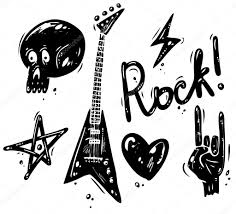
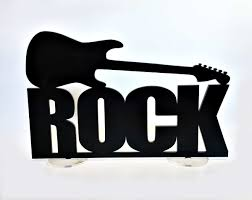
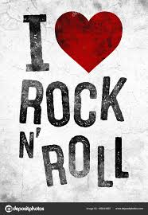
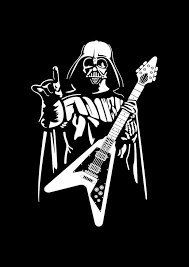
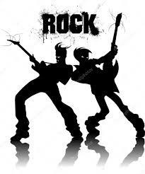
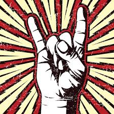

O rock brasileiro, mais conhecido no Brasil como rock nacional, e no estrangeiro como BRock, teve início no final da década de 1950, conquistando maior popularidade na década de 1980.
Década de 1950

O "pontapé inicial" do rock no Brasil foi Nora Ney (conhecida cantora de samba-canção) quando gravou o considerado primeiro rock, "Rock Around the Clock", de Bill Haley & His Comets (trilha dos filme Sementes da Violência), em outubro de 1955, para a versão brasileira do filme. Em uma semana a canção já estava no topo das paradas (mas Nora Ney nunca mais gravou nada no gênero, tirando a irônica "Cansei do Rock", em 1961). Em dezembro, a mesma canção recebia versão em português, "Ronda das Horas" (por Heleninha Ferreira) e outra gravada pelo acordeonista Frontera, não tão bem sucedidas quanto a "original". Em janeiro do ano seguinte, a canção ganhou uma versão por Marisa Gata Mansa.
Década de 1960

1960, surgira até a Revista do Rock, que elegeu o estreante Sérgio Murilo como "Rei do Rock" brasileiro.
Roberto Carlos chegou a tentar uma carreira como cantor de bossa nova, agenciado por Carlos Imperial, em 1961 lança seu primeiro álbum Louco por Você de 1961, que foi um fracasso, até que dois anos depois, lança um disco de rock, Splish Splash. A faixa-título, versão de uma canção de Bobby Darin, e Parei na Contramão rapidamente tornam-se hits. O álbum traz outras canções dele, Erasmo e Luiz Ayrão. Erasmo e os Snakes gravam o compacto Calypso Rock, surgem também os cantores Demétrius, Eduardo Araújo, Ronnie Cord, Albert Pavão entre outros.
Década de 1970

O endurecimento do Regime militar levou Caetano e Gil ao exílio em Londres, onde viveram de 1969 a 1972. Durante o período, gravaram dois discos considerados dos seus melhores: Transa (Caetano) e Expresso 2222 (Gil).
Após sair dos Mutantes no final de 1972, Rita Lee iniciou sua carreira solo, acompanhada do grupo Tutti Frutti. É nesse período que ela lança o seu mais memorável álbum: Fruto Proibido (1975), disco este que contém os sucessos "Agora Só Falta Você", "Esse Tal de Roque Enrow" e "Ovelha Negra". Arnaldo Baptista também gravou o aclamado Lóki? (1974). Os Mutantes ainda atravessaram a década convertidos ao rock progressivo, passando por várias formações e dissolvendo-se em 1978.
Década de 1980
Foi no início da década de 1980 que surgiu o primeiro selo independente para bandas de punk rock, chamado Punk Rock Discos. Foi com este selo que a banda Lixomania gravou o primeiro single de uma banda de punk rock do Brasil, com 6 canções. O álbum Grito Suburbano, o primeiro LP com bandas de punk rock do Brasil, também foi lançado através deste selo. O álbum é uma compilação DIY com Inocentes, Olho Seco e Cólera. Em 1982 o primeiro grande evento, O Começo do Fim do Mundo, surgiu como o marco inicial do punk rock brasileiro, com 20 bandas da cidade de São Paulo e do ABC paulista. A apresentação terminou em um confronto com a polícia.
Década de 1990
Foi em 1990 que foi lançado aquele que é considerado o primeiro álbum conceitual brasileiro - Searching for the Light, da banda carioca de thrash metal Dorsal Atlântica. A crítica cunhou o disco, influenciado pelo livro 1984 de George Orwell, de a primeira Thrash Opera do mundo. Dentre as novidades da década, está o surgimento da MTV Brasil, em 1990. O período ficou marcado pelo enorme crescimento da indústria do videoclipe no Brasil, além da emissora musical oferecer oportunidades de divulgação para inúmeras bandas que estavam em início de carreira. Com isso, todos os grupos de destaque na época, tiveram seus clipes veiculados no canal.
Década de 2000

O ano de 2001 foi um ano "trágico" para o rock brasileiro: Herbert Vianna, dos Paralamas, sofreu acidente de ultraleve e ficou paraplégico (mas voltou a tocar); Marcelo Fromer, dos Titãs, morreu atropelado; Cássia Eller faleceu; Marcelo Yuka, baterista de O Rappa, foi baleado, ficou paraplégico, saiu da banda e formou o grupo F.UR.T.O (Frente Urbana de Trabalhos Organizados), que segue o mesmo estilo musical e ideologia que o consagrou O Rappa.
Década de 2010
Na última década, surgiu no cenário alternativo alguns grupos com inúmeras vertentes, indo do Indie ao Stoner Rock, passando pela MPB, pela psicodelia e pelo Rock Brasileiro da década de 1980. Entre essas bandas estão Vivendo do Ócio, Selvagens à Procura de Lei, Vespas Mandarinas, O Terno, Boogarins, Maglore, Far From Alaska, Apanhador Só, The Baggios, Marrero e Ego Kill Talent.